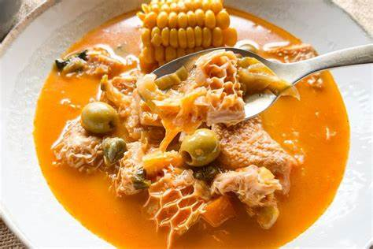
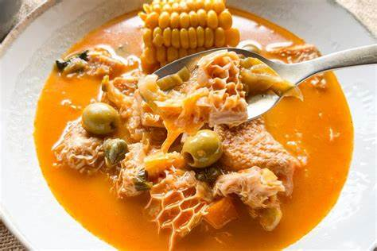

Platos Típicos de La Paz
La Paz es conocida por su diversidad cultural, y el Plato Paceño es uno de sus platos insignia, lleno de sabores andinos.

La Paz es conocida por su diversidad cultural, y el Plato Paceño es uno de sus platos insignia, lleno de sabores andinos.
Cochabamba es conocida como la capital gastronómica de Bolivia, con platos como el Pique Macho que satisfacen el apetito de todos.
En Potosí destaca el Kalapurka, una sopa ancestral que se sirve con una piedra caliente para mantener la temperatura.
Santa Cruz es famosa por su Majadito, una mezcla de arroz, carne y plátano frito que refleja los sabores del oriente boliviano.

El Charquekan es un plato típico de Oruro, hecho a base de carne deshidratada, maíz, y queso fresco.

Chuquisaca es famosa por sus Salteñas, una empanada jugosa que es un deleite en las mañanas.
 

Tarija es reconocida por el Saice Tarijeño, una delicia con carne molida y arroz.
El Masaco, hecho de plátano verde y charque, es uno de los platos más representativos del Beni.
En Pando, el Asadito Pandeño es un plato típico que combina carne asada con yuca.